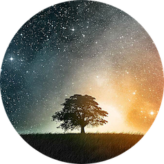

|  |
Victoria Quinn
Nací en la ciudad de Oaxaca, México, en agosto de 2013. Actualmente curso el tercer grado de primaria. Me fascina la ciencia, la Astronomía, el origen del universo y las estrellas. Me gustaría ser una científica o astronauta, médica o programadora. Hace aproximadamente un año comencé a estudiar programación y robótica siguiendo los tutoriales de la fundación Raspberry Pi y Hourofcode, así como los video-tutoriales de Al Sweigart y Griffpatch en Youtube. Mi papá y yo somos grandes aficionados de Scratch y Raspberry Pi. |